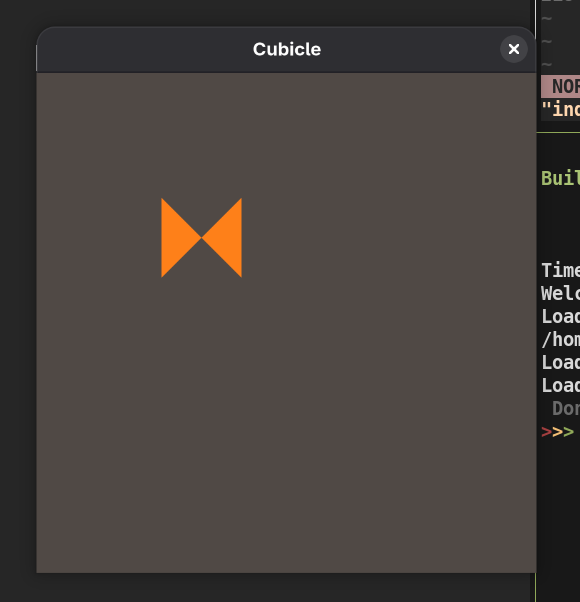
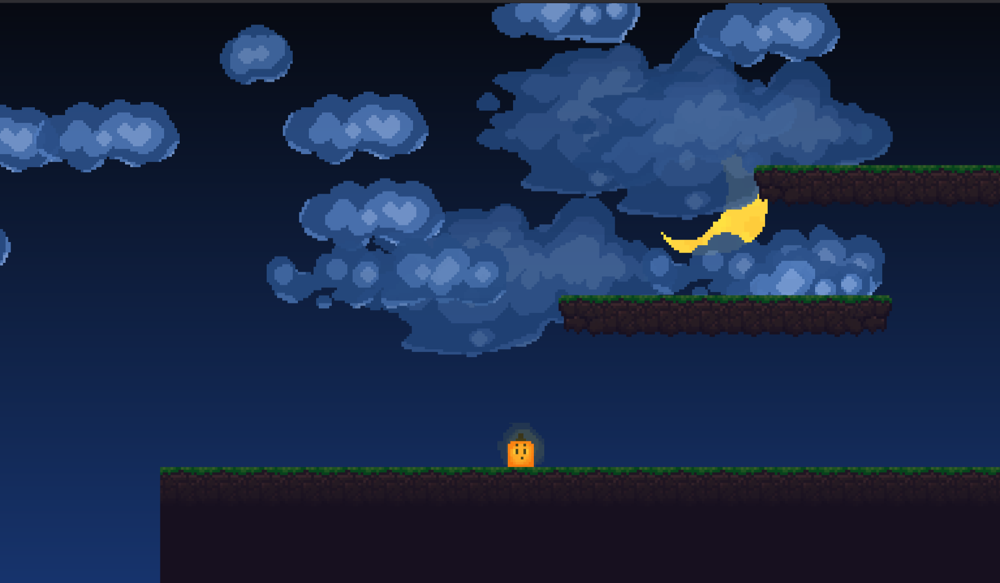

Interactive development in F#
Hi all, in this article I wanna show how you can use interactive programming techniques to write software in faster and more enjoyable way. Also, we are going to impement simple game in F# and take a look at
What is a REPL now and what it could be
REPL (read-eval-print-loop) is a simple program which reads code entered by a user, evaluates it and prints back to the user. It allows user to actually interact with a language they’re working with: they can immediately see results of expressions they type, assign these expressions to variables and reuse variables in further expressions. So user can execute what they want step-by-step, quickly test new code, inspecting existing state, etc.
Nowadays almost every language has some form of REPL. Usually, they are treated as minor addition to language implementation - as learning tool for beginner or a way to quickly test new ideas. Sometimes they are treated more seriously: jupiter-notebook, for example, is a great and immensely popular tool for different kinds of scientific computations. But what if we could use such interactive tool for actual software development? Not only for small scripts or ‘drafty/sketchy??’ experiments, but real software?
The bigger a software gets, the more painful and slow it becomes to debug and modify it. Compilation time increases, internal state gets more and more complicated and hard to reproduce. I actually got burned out from my previous job as to reproduce the tiniest bug i had to wait at least 5 minutes for compilation, few minutes of program start up, and then navigate through dozens of different windows and menus. And guess what feature is the most prominent in REPLs? That’s right, fast feedback loop! Wouldn’t it be great to execute program once in a repl, capture needed state and reevaluate needed function until it stops failing?
A lot of REPLs already can do that. Entire family of LISP languages are known for their powerful REPLs. Moreover, REPLs were firstly introduced in early LISP implementations and term itself comes from minimal REPL definition written in lisp:
(loop (print (eval (read))))
Typical LISP repl has many features your average modern repl lacks:
- ability to load entire project into repl
- ability to modify any function (compared to just adding new function with same name)
- advanced error handling - if your expression throws an error, repl acts like interactive debugger - it opens new sub-repl which has all context of faulty function.
- ability to persist entire repl state, with all variables and memory intact into a file. So u can easily restore it for next sessions
- ability to attach to existing remote process and execute repl commands in it
Lisp machines were a pinnacle of such magic. All programs shared a single large address space, so user could inspect, evaluate or modify any function of any program on their computer. Instead ofshexecuting binaries, they had lisp repl executing lisp functions.
One notable example of lisps is Clojure. It is modern language, with strong focus on functional programming which works on top of JVM. And good repl is one of it’s most compelling features. And honestly, by discovering and trying out this language I fell in love with repl driven development. So I’ve started wondering - why not use same approach, but in my favorite F#?
Improving F# REPL
For being actual development tool, dotnet fsi lacks 2 important features.
- Putting entire project into repl.
fsi is designed to work with .fsx script files, not actual projects or solutions. - Hot reloading of already compiled functions. Compared to lisp’s, you cannot simply modify parts of running code. Sure, you can reevaluate a function, but instead of modifying existing one, it would just create new one with same name, so you’d need to reevaluate all functions which depend on this function too;
First feature is easily solvable. As fsi supports loading of DDLs, you just need to reference all binaries of your program. And a lot of tools, like vscode-ionide, allow you to generate such references in a single command.
But without second feature repl as dev tool loses it’s core benefit - fast feedback loop. How it even differs from regular edit-compile-run cycle if u need for every minor change recompile project, restart repl and re-reference all dlls?
Modifying .net assembly in runtime is, thankfully, relatively easy, and there are many libraries, like Harmony that do this. Of course, there are still clr limitations as we cannot identify existing types, change function signatures, or modify generic functions.
And to fix those limitations I’ve made fsix, a repl which contains these features as well as some additional niceties. In next chapter, I will demonstrate how repl driven development might increase your development speed and comfort.
Creating a simple platformer game in F#
For demonstration lets create simple video game - because it’s fun and because it’s a perfect place where interactive programming really shines. We will use Avalonia.FuncUI for drawing and IO. Sure, this is UI library, not gamedev lib. But it is very simple, f# friendly, supports everything we need and has support for Elmish MVU pattern, which is functional and transforms perfectly onto classical gameloop pattern.
Basic architecture
Our project will contain 3 core files:
- Update.fs, which contains our state type, event type and function which on some event updates state:
module Cubicle.Update
open Avalonia.Input
type GameState = unit
type Event =
| Tick
| KeyPressed of Key
| KeyReleased of Key
let initFn (): GameState = ()
let updateFn event state = state
- View.fs, which contains a function which creates a view model for given state:
module Cubicle.View
open Avalonia.FuncUI.DSL
open Elmish
open Cubicle.Update
let viewFn (s: GameState) (d: Dispatch<Event>): IView =
Panel.create [
Panel.background "#504945"
]
- and Program.fs, which takes all of that and wraps in a program:
module Cubicle.Program
...
type MainWindow() as this =
inherit HostWindow()
do
base.Title <- "Cubicle"
base.Height <- 400.0
base.Width <- 400.0
Program.mkSimple Update.initFn Update.updateFn View.viewFn
|> Program.withHost this
|> Program.withSubscription subscriptions
|> Program.run
type App() = ...
module Program =
[<EntryPoint>]
let main(args: string[]) =
AppBuilder
.Configure<App>()
.UsePlatformDetect()
.UseSkia()
.StartWithClassicDesktopLifetime(args)
So, this is basic template for our game, which at this moment simply shows blank screen.
Adding player and basic movement
Ok let’s start actually coding!
First, we need to add event emitters for our game. By looking at our Event type, you can see that one of them would emit ticks every n miliseconds, and two other would provide basic keyboard controls:
let subscriptions (_state: GameState) =
let timerSub (dispatch: Dispatch<Event>) =
let invoke () =
Event.Tick |> dispatch
true
DispatcherTimer.Run(invoke, TimeSpan.FromMilliseconds 16.0)
let keyDownSub (dispatch: Dispatch<Event>) =
this.KeyDown.Subscribe(fun eventArgs -> KeyPressed eventArgs.Key |> dispatch)
let keyUpSub (dispatch: Dispatch<Event>) =
this.KeyUp.Subscribe(fun eventArgs -> KeyReleased eventArgs.Key |> dispatch)
[ [ nameof timerSub ], timerSub
[ nameof keyDownSub ], keyDownSub
[ nameof keyUpSub ], keyUpSub
]
// And modify our program to include these event emmiters
Program.mkSimple Update.initFn Update.updateFn View.viewFn
|> Program.withHost this
|> Program.withSubscription subscriptions
|> Program.run
Now, let’s add player to our game. For now, it will include player’s position and velocity:
let playerSize = new Vector(64, 64)
type Player = {
Position: Vector
Velocity: Vector
}
type GameState = {
Player: Player
}
let initFn (): GameState =
{ Player = { Position = new Vector(100, 200)
Velocity = new Vector(0, 0)} }
let updateFn = function
| Tick -> fun (s: GameState) -> s
| _ -> id
We also need to draw this player. For now, let it be just a small orange cube:
let playerToPoints (resolution: Vector) (p: Player) =
let newPos = new Point(p.Position.X, resolution.Y - p.Position.Y)
[
newPos
new Point(newPos.X, newPos.Y + playerSize.Y)
new Point(newPos.X + playerSize.Y, newPos.Y)
new Point(newPos.X + playerSize.Y, newPos.Y + playerSize.Y)
]
kj
let drawPlayer res player: IView =
Polygon.create [
let points = playerToPoints res player
Shapes.Polygon.points points
Shapes.Polygon.fill "#fe8019"
]
In graphics, coordinates start from top left corner. But it feels more natural to start with bottom left corner, if you are working with game logic. So playerToPoints takes into account window resolution and converts player to 4 points on screen.
Let’s run our game in repl! And we can also make init script which will open all our modules and start a game immediately in repl:
open Cubicle.Program
open Cubicle.View
open Cubicle.Update
//open all other needed avalonia and lens modules
open System.Threading.Tasks
Task.Run(fun () -> Program.main [||])
So we can start our project in repl immediately by command like
dotnet build && fsix --use repl.fsx
Aaand, we messed up somewhere with polygons:

Elmish is optimized to not update view if it wasn’t changed, and as our update function does nothing, even if we modify it, it wont run new view function. So, let’s make our update function do something.
For modifying game state, I will use Lenses - constructs which allow us to focus on, inspect and modify specific elements in complex nested structures. Here are some examples:
module Lenses =
[<AutoOpen>]
module Player =
let inline _pos f p =
f p.Position <&> fun x -> { p with Position = x }
let inline _vel f p =
f p.Velocity <&> fun x -> { p with Velocity = x }
[<AutoOpen>]
module GameState =
let inline _player f s =
f s.Player <&> fun x -> { s with Player = x }
So basically, lens is a pair of getter and setter for specific element in bigger type. We provided setter for player.velocity, player.position and state.player. Usually, such trivial templatish lenses are autogenerated, but I dont wanna mess here with code generators.
Let’s also make lenses to modify either X or Y in given vector:
let inline _1v f (v: Vector) = f v.X <&> fun x -> new Vector(x, v.Y)
let inline _2v f (v: Vector) = f v.Y <&> fun y -> new Vector(v.X, y)
Really nice feature about lenses is that you can compose them. Consider you want a lens from gamestate to player position or velocity. You can easily do that using functional composition over two existing lenses:
let posL = _player << _pos
let velL = _player << _vel
There are 2 important functions we gonna use a lot:
- setl - sets new value by using given lens. It has signature like
(lens 'T -> 't) -> 't -> 'T -> 'T - over - modifies value by using given lens. It has signature like
(lens 'T -> 't) -> ('t -> 't) -> 'T -> 'T
So, if we want to update player position and move it 20 pixels right, instead of nested with expressions, we can simply write
over (posL << _1v) ((+) 20.0)
Let’s now update our game logic to move on WASD:

And our render can be easily fixed by proper order of points. Now we can test it as our state updates every time we move:
Adding physics
Ok, but moving by only changing position feels clunky. And we are making a platformer, so we definitely need to add gravity.(change)
Let’s make player move based on velocity, not just statically update it’s position:
module Physics =
let playerVeocity = 10.0
let applyVel s = over posL ((+) s.Player.Velocity) s
open Physics
let updateFn = function
| Tick -> applyVel
| KeyPressed Key.W -> over (velL << _2v) ((+) playerVeocity)
| KeyPressed Key.A -> over (velL << _1v) ((+) -playerVeocity)
| KeyPressed Key.S -> over (velL << _2v) ((+) -playerVeocity)
| KeyPressed Key.D -> over (velL << _1v) ((+) playerVeocity)
| _ -> id
But there is no drag! Player keeps moving like they’d do in space vacuum. Instead, let’s stop player after moving button is released:
| KeyReleased Key.W -> setl (velL << _2v) 0.0
| KeyReleased Key.A -> setl (velL << _1v) 0.0
| KeyReleased Key.S -> setl (velL << _2v) 0.0
| KeyReleased Key.D -> setl (velL << _1v) 0.0
For more natural moving, we should add drag. Oh and also gravity!
Gravity would work like that:
- There is constant force/velocity g moving us downwards
- If we are staying on the floor, it counteracts gravity
- When player jumps, it’s vertical velocity overcomes gravity, but gravity gradually returns back
We also need to be sure that player can jump only when it touches the ground. So we’d need a flag for that:
type Player = {
Position: Vector
Velocity: Vector
Grounded: bool
}
And yeah, that sucks - as we modified player type, we cannot use hot reloading anymore, we need recompile and restart our project. So, sometimes static type system has it’s downsides!
But before we restart game, let’s add gravity logic:
module Gravity =
let g = 10.0
let applyG = function
//if player is in jump, slowly make it move faster and faster to the ground, untill he meets terminal g velocity
| s when s.Player.Velocity.Y > -g && not s.Player.Grounded ->
over (velL << _2v) ((+) -1) s
//set g velocity to grounded objects
| s -> setl (velL << _2v) (-g) s
let floorCheck = function
| s when s.Player.Position.Y <= 30 ->
s
|> setl (posL << _2v) 30
|> setl (_player << _grounded) true
| s -> s
let jump = setl (velL << _2v) (2.0*g) >> setl (_player << _grounded) false
let updateFn = function
| Tick -> applyVel >> applyG >> floorCheck
| KeyPressed Key.Space -> function
| s when s.Player.Grounded -> jump s
| s -> s
| KeyPressed Key.A -> over (velL << _1v) ((+) -playerVeocity)
| KeyPressed Key.S -> over (velL << _2v) ((+) -playerVeocity)
| KeyPressed Key.D -> over (velL << _1v) ((+) playerVeocity)
| KeyReleased Key.A -> setl (velL << _1v) 0.0
| KeyReleased Key.S -> over (velL << _2v) ((+) (-2.0*g))
| KeyReleased Key.D -> setl (velL << _1v) 0.0
| _ -> id
In similar way, let’s add drag - so on releasing movement button player doesn’t stop immediately, but has some small inertia.
type Player = {
Position: Vector
Velocity: Vector
Grounded: bool
Drag: float
}
Drag applies only to side motions, so it can be represented as single float. We will create drag force only when player stops moving sideways. But when player starts moving, moving will compensate any drag so for simplification we can set it to zero:
| KeyPressed Key.A -> setl (velL << _1v) -playerVelocity >> setl dragL 0
| KeyPressed Key.D -> setl (velL << _1v) playerVelocity >> setl dragL 0
| KeyReleased Key.A -> setl dragL -dragForce
| KeyReleased Key.D -> setl dragL dragForce
And, function to apply this drag:
module Drag =
let dragForce = 2.0
let applyDrag (s: GameState) =
match s.Player.Drag, s.Player.Velocity.X with
| d, v when d > 0 && v > 0 || d < 0 && v < 0
-> over (velL << _1v) ((+) -d) s
| d, _ when d <> 0 ->
setl dragL 0 s
| _, _ -> s
So now we have inertia and gravity.
Platforms and hitboxes
But what a platofmer doesn’t have platforms? Let’s add them! But firstly, let’s think what common in our game is in platform and player - they are both rectangles, they are both needed to be drawn on screen, and they are collidable with each other.
So, let’s represent them as hitboxes:
type Hitbox = {
Min: Vector
Max: Vector
}
type Platfotm = {
Hitbox: Hitbox
} with member this.GetHitbox = this.Hitbox
type Player = {
Position: Vector
Velocity: Vector
Grounded: bool
Drag: float
} with member this.GetHitbox = {Min = this.Position; Max = this.Position + playerSize}
So now we can have abstraction like:
let inline getHitbox<'a when 'a:(member GetHitBox: Hitbox)> (x: 'a) = x.GetHitBox
And of course, let’s add platforms to the state:
type GameState = {
Player: Player
Platforms: Platfotm list
}
let platformWidth = 30.0
let mkPlatform pos length = {Hitbox = { Min = pos; Max = new Vector(pos.X + length, pos.Y + platformWidth)}}
let initFn (): GameState =
{ Player = {...}
Platforms = [ mkPlatform (new Vector(100, 300)) 200
mkPlatform (new Vector(400, 400)) 150 ] }
Before writing collision code, let’s firstly draw these platforms. Remember playerToPoints function? We can simply rewrite it to hitboxToPoints:
let hitboxToPoints (resolution: Vector) (h: Hitbox) =
let hB = {
Min = resolution - h.Min
Max = resolution - h.Max
}
[
new Point(h.Min.X, hB.Min.Y)
new Point(h.Min.X, hB.Max.Y)
new Point(h.Max.X, hB.Max.Y)
new Point(h.Max.X, hB.Min.Y)
]
So, now we can see these platforms!
Ok, now let’s implement collision. Firstly, we need to make collision detection:
let inline collides h1 h2 =
let a = getHitbox h1
let b = getHitbox h2
a.Max.X > b.Min.X &&
a.Min.X < b.Max.X &&
a.Max.Y > b.Min.Y &&
a.Min.Y < b.Max.Y
Then, on every tick we will check every platform which collided with a player. If during collision player was falling on the platform from the top, it means player landed on it, so we’ll set players Y to platforms floor and Player.Grounded to true. Otherwise, we will push player out of the platform, to the side from which player appeared:
let checkCollision s =
let collidedPlatforms = s.Platforms |> List.filter (collides s.Player)
let foldFn player platform =
let pPos, pVel = player.Position, player.Velocity
let {Min = playerMin; Max = playerMax} = player.GetHitbox
let {Min = platMin; Max = platMax} = platform.Hitbox
let isFalling = pVel.Y <= 0.0
if isFalling && playerMin.Y >= platMin.Y && playerMax.Y >= platMax.Y then //when player is on topside
let newPos = pPos |> _2v .-> platform.Hitbox.Max.Y
{player with Position = newPos; Grounded = true}
else if playerMax.Y >= platMin.Y && playerMin.Y < platMin.Y then // from down
{ player with Position = setl _2v (platMin.Y - playerSize.Y) pPos
Velocity = setl _2v (-g) pVel }
else if playerMin.X <= platMin.X && playerMax.X <= platMax.X then // from left
{ player with Position = setl _1v (platMin.X - playerSize.X) pPos }
else
{ player with Position = setl _1v platMax.X pPos } // from right
setl (_player << _grounded) s.Player.Grounded s
|> over _player (collidedPlatforms |> flip (List.fold foldFn))
let updateFn = function
| Tick -> applyVel >> applyDrag >> applyG >> floorCheck >> checkCollision
...
I was struggling a lot with writing this function, but hot reloading helped a lot with this debugging. (I wont show another demo tho, as it’d be too boring to look how I 10+minutes debug one single function)
Oh, and with this collision code, we can remove floorCheck from our pipeline - instead, we can represent floor as just another platform:
let floor = { Hitbox = {Min = Vector(0, 0); Max = Vector (20000, 40)} }
Making camera move alongside player
Ok but now we have one issue - if player moves further than screen size, we won’t se it. To counteract that, we’d modify hitboxToPoints function to also take into account players position:
let hitboxToPoints (resolution: Vector) offset (h: Hitbox) =
let hB = {
Min = resolution - h.Min + offset
Max = resolution - h.Max + offset
}
let minX = h.Min.X - offset.X
let maxX = h.Max.X - offset.X
[
new Point(minX, hB.Min.Y)
new Point(minX, hB.Max.Y)
new Point(maxX, hB.Max.Y)
new Point(maxX, hB.Min.Y)
]
let getOffset (resolution: Vector) (p: Player) =
let halfRes = resolution * 0.5
let yRes = resolution * 0.2
let pPos = p.Position
let xOffset = if pPos.X >= halfRes.X then pPos.X - halfRes.X else pPos.X - halfRes.X
let yOffset = if pPos.Y >= halfRes.Y then pPos.Y - yRes.Y else pPos.Y - yRes.Y
new Vector(xOffset, yOffset)
Adding textures
Let’s make our game pretty!
Player
We will start from the player. Our tilemap contains 4 player position, facing different directions. We will need to load bitmap, and then make image brush from it:
let playerMap = new Bitmap "Assets/player.png"
let playerDefault = playerMap |> ImageBrush
playerDefault.SourceRect <- new RelativeRect(0.0, 0.0, 16.0, 16.0, RelativeUnit.Absolute)
Right after adding our player you can see its very blurry, that’s because interpolation. We need to disable it:
Control.bitmapInterpolationMode BitmapInterpolationMode.None
In the same way, we will add brushes for all player directions:
let playerRight = playerMap |> ImageBrush
playerRight.SourceRect <- new RelativeRect(16.0, 0.0, 16.0, 16.0, RelativeUnit.Absolute)
let playerLeft =
let playerLeft = playerMap |> ImageBrush
playerLeft.SourceRect <- new RelativeRect(16.0, 0.0, 16.0, 16.0, RelativeUnit.Absolute)
let mirrorMatrix =
Matrix.CreateScale (new Vector(-1.0, 1.0))
|> _.Append
<| Matrix.CreateTranslation(new Vector(playerSize.X, 0.0))
playerLeft.Transform <- new MatrixTransform(mirrorMatrix)
playerLeft
let playerDown =
let playerDown = playerMap |> ImageBrush
playerDown.SourceRect <- new RelativeRect(0.0, 16.0, 16.0, 16.0, RelativeUnit.Absolute)
playerDown
let playerJump =
let playerJump = playerMap |> ImageBrush
playerJump.SourceRect <- new RelativeRect(16.0, 16.0, 16.0, 16.0, RelativeUnit.Absolute)
playerJump
playerLeft is mirrored playerRight, so we had to apply transform matrix to it
And we’ll choose what tile to use by checking player’s velocity:
let drawPlayer res offs (p: Player): IView =
let tile =
match p.Velocity with
| Vec2(_, y) when y > 0 -> playerJump
| Vec2(_, y) when y < 0 && not p.Grounded -> playerDown
| Vec2(x, _) when x < 0 -> playerLeft
| Vec2(x, _) when x > 0 -> playerRight
| _ -> playerDefault
Polygon.create [
let points = hitboxToPoints res offs (getHitbox p)
Control.bitmapInterpolationMode BitmapInterpolationMode.None
Shapes.Polygon.points points
Shapes.Polygon.fill tile
]
Where Vec2 is neat active pattern:
let (|Vec2|) (v: Vector) = struct(v.X, v.Y)
Let’s make nice background too. We’ll add moon and clouds:
let drawMoon res =
let moonSize = new Vector(42, 43)
let moonPos = new Vector(500, 500)
let hb = {Min = moonPos; Max = moonPos + moonSize}
let points = hitboxToPoints res (new Vector(0, 0)) hb
Polygon.create [
Control.bitmapInterpolationMode BitmapInterpolationMode.None
Shapes.Polygon.points points
Shapes.Polygon.fill moonBrush
]
World
Clouds are a little bit trickier as we have only single 128x128 tile, and we need to spread them out. At first, let’s add few clouds manually:
module Clouds =
let cloudsMap = new Bitmap "Assets/clouds.png"
let cloudScale = 4.0
let mkBrush bitmap x y w h =
let brush = mkBrush bitmap x y w h
brush.Opacity <- 0.9
brush
let cloud1 = mkBrush cloudsMap 0 0 64 32
let cloud2 = mkBrush cloudsMap 64 0 64 32
let bigCloud1 = mkBrush cloudsMap 0 32 96 32
let smolCloud = mkBrush cloudsMap 96 32 32 32
let bigCloud2 = mkBrush cloudsMap 0 64 128 64
let drawCloud res offs (brush: ImageBrush) pos =
let size = new Vector(brush.SourceRect.Rect.Width, brush.SourceRect.Rect.Height) * cloudScale
let hb = {Min = pos; Max = pos + size}
mkPolygon res offs hb brush
let drawClouds res (offs: Vector) =
let drawCloud brush x y = drawCloud res Vector.Zero brush (new Vector(float x, float y))
Panel.create [
Panel.children [
drawCloud smolCloud 500 500
drawCloud bigCloud2 300 300
]
] :> IView
However, clouds right now look too flat. Let’s add parallax effect - all we need to do is provide offset multiplied by really small value:
I also want clouds to drift and I realized I am too lazy to add all of them manually. So, they should be part of game state.
module Clouds =
type CloudType = Cloud1 | Cloud2 | Long | Smol | Big
with static member cases = [|Cloud1; Cloud2; Long; Smol; Big |]
type Cloud = {
Position: Vector
Type: CloudType
Velocity: Vector
}
type GameState = {
Player: Player
Platforms: Platforms.Platform list
Clouds: Clouds.Cloud list
}
We will generate platform like that:
type CloudVelocity = Slow | Fast | VerySlow
with static member cases = [|Slow; Fast; VerySlow|]
let generateRandomCloud pos =
let cloudType = random.Next() % 5 |> fun i -> CloudType.cases[i]
let cloudVelocity =
match random.Next() % 3 |> fun i -> CloudVelocity.cases[i] with
| Slow -> new Vector(0.1, 0.0) * 1.2
| Fast -> new Vector(0.5, 0.0) * 1.2
| VerySlow -> new Vector(0.05, 0.0) * 1.2
let velocityScale =
match cloudType with
| Big -> 0.3
| _ -> 1.0
{Position = pos; Type = cloudType; Velocity = cloudVelocity * velocityScale}
And teleport back clouds which went too far out of game scene:
let moveBackClouds = over _clouds (List.map (fun c ->
if c.Position.X > cloudZone.Max.X then
{c with Position = setl _1v cloudZone.Min.X c.Position}
else c))
So now it looks like this:
We can also add glowing animation to the player and gradient for nicer sky:
I’ve tried to add platforms in same way, by using built-in TileMode functionality. And this is when I realized I’ve should’ve use proper game framework and not an ui library:
No matter what I’ve tried, image kept moving alongside a camera. So, we’d need to use static images for each kind of platform. Let’s modify platform type to be like this:
type PlatformType = ShortPlatform | LongPlatform | SideWall | Floor
type Platform = {
Position: Vector
Type: PlatformType
} with
member this.GetHitbox =
match this.Type with
| ShortPlatform -> {Min = this.Position; Max = this.Position + new Vector(128, 32)}
| LongPlatform -> {Min = this.Position; Max = this.Position + new Vector(256, 32)}
| Floor -> {Min = this.Position; Max = this.Position + new Vector(2048, 512)}
| SideWall -> {Min = this.Position; Max = this.Position + new Vector(32, 4096)}
static member mk t x y = {Position = new Vector(x, y); Type = t}
And now it works:

by providing state updater like:
let liveEditPlatforms s = {s with Platforms = getPlatforms ()}
we can in live edit create our level:
That’s it!
References
I was heavily inspired by these articles:
- https://clojure.org/guides/repl/introduction
- https://oli.me.uk/Blog+archive/2020/Conversational+software+development
Also, I really liked playing with Trial Game Engine and it encouraged me to showcase a game instead of something else. Check this game engine out! It is written in Lisp and also supports and encourages REPL driven development.
I was writing this game as a demo for fsix, but I really enjoyed the process of making it. It gave me so many nostalgic feelings, when I was writing very simmilar simple games as highschooler. So maybe, in the future I’ll move this demo to raylib-cs, and implement some sort of ECS framework.
See you!